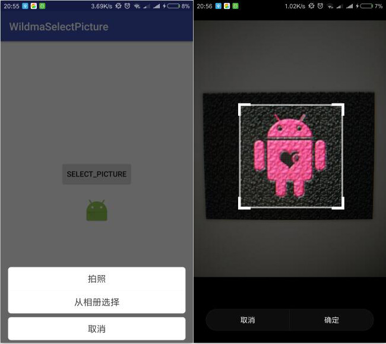

前言
几乎每个APP都需要图片选择和裁剪功能，因为涉及到相机和存储，所以该功能还是要考虑很多兼容性的。这也是github上有一大堆图片选择框架的原因，但是你会发现github上找的图片选择框架并不是简单的只有图片选择， 它还包含视频选择、视频录制、图片压缩等等一大堆功能。其实你只需要一个头像选择的功能，那些框架很多功能你根本用不到，而且代码至少也几十个类，后期有问题改起来也是麻烦事。所以我就封装了一个代码及其简洁的图片选择框架，没有任何多余的功能，涉及的主要功能类只有3个，使用也是非常简单。
效果图如下：
一、功能特点
- 支持通过拍照获取图片
- 支持通过相册获取图片
- 支持图片裁剪
- 支持仿IOS底部弹出选择菜单ActionSheet效果
- 支持6.0动态授予权限
- 解决图片有黑边问题
- 解决7.0调用相机报FileUriExposedException的问题
- 解决小米miui系统调用系统裁剪图片功能crash问题
- 解决华为设备裁剪框为圆形的问题
二、使用
Step 1. 添加JitPack仓库
在项目的build.gradle添加JitPack仓库
allprojects {
repositories {
...
maven { url "https://jitpack.io" }
}
}Step 2. 添加依赖
在需要使用的module中添加依赖（最新版本见 PictureSelector）
dependencies {
compile 'com.github.wildma:PictureSelector:1.1.3'
}或者引用本地lib
compile project(':pictureselector')Step 3. 拍照或者从相册选择图片
/**
* create()方法参数一是上下文，在activity中传activity.this，在fragment中传fragment.this。参数二为请求码，用于结果回调onActivityResult中判断
* selectPicture()方法参数分别为 是否裁剪、裁剪后图片的宽(单位px)、裁剪后图片的高、宽比例、高比例。都不传则默认为裁剪，宽200，高200，宽高比例为1：1。
*/
PictureSelector
.create(MainActivity.this, PictureSelector.SELECT_REQUEST_CODE)
.selectPicture(true, 200, 200, 1, 1);
Step 4. 获取图片地址进行显示
@Override
protected void onActivityResult(int requestCode, int resultCode, Intent data) {
super.onActivityResult(requestCode, resultCode, data);
/*结果回调*/
if (requestCode == PictureSelector.SELECT_REQUEST_CODE) {
if (data != null) {
String picturePath = data.getStringExtra(PictureSelector.PICTURE_PATH);
mIvImage.setImageBitmap(BitmapFactory.decodeFile(picturePath));
/*如果使用 Glide 加载图片，则需要禁止 Glide 从缓存中加载，因为裁剪后保存的图片地址是相同的*/
/*RequestOptions requestOptions = RequestOptions
.circleCropTransform()
.diskCacheStrategy(DiskCacheStrategy.NONE)
.skipMemoryCache(true);
Glide.with(this).load(picturePath).apply(requestOptions).into(mIvImage);*/
}
}
}三、代码
每个类的注释我都写的很清楚了，所以这里只贴出主要的图片工具类，其他可以到我的Github上查看源码（见文末）。
选择图片工具类：
package com.wildma.pictureselector;
import android.app.Activity;
import android.content.Context;
import android.content.Intent;
import android.graphics.Bitmap;
import android.graphics.BitmapFactory;
import android.net.Uri;
import android.os.Build;
import android.provider.MediaStore;
import android.support.v4.content.FileProvider;
import android.widget.Toast;
import java.io.File;
import java.io.FileNotFoundException;
/**
* Author wildma
* Github https://github.com/wildma
* CreateDate 2018/6/10
* Desc ${选择图片工具类}
* 使用方法：
* 1. 调用getByCamera()、getByAlbum()可通过拍照或相册获取图片
* 2. 在onActivityResult中调用本工具类的onActivityResult方法处理通过相册或拍照获取的图片
*/
public class PictureSelectUtils {
public static final int GET_BY_ALBUM = 0x11;//相册标记
public static final int GET_BY_CAMERA = 0x12;//拍照标记
public static final int CROP = 0x13;//裁剪标记
private static Uri takePictureUri;//拍照图片uri
public static Uri cropPictureTempUri;//裁剪图片uri
/**
* 通过相册获取图片
* @param activity
*/
public static void getByAlbum(Activity activity) {
Intent intent = new Intent(Intent.ACTION_PICK,
MediaStore.Images.Media.EXTERNAL_CONTENT_URI);
intent.setType("image/*");
activity.startActivityForResult(intent, GET_BY_ALBUM);
}
/**
* 通过拍照获取图片
* @param activity
*/
public static void getByCamera(Activity activity) {
takePictureUri = createImagePathUri(activity);
if (takePictureUri != null) {
Intent i = new Intent(MediaStore.ACTION_IMAGE_CAPTURE);
i.putExtra(MediaStore.EXTRA_OUTPUT, takePictureUri);//输出路径（拍照后的保存路径）
activity.startActivityForResult(i, GET_BY_CAMERA);
} else {
Toast.makeText(activity, "无法保存到相册", Toast.LENGTH_LONG).show();
}
}
/**
* 创建一个图片地址uri,用于保存拍照后的照片
*
* @param activity
* @return 图片的uri
*/
public static Uri createImagePathUri(Activity activity) {
try {
FileUtils.createOrExistsDir(Constant.DIR_ROOT);
StringBuffer buffer = new StringBuffer();
String pathName = buffer.append(Constant.DIR_ROOT).append(Constant.APP_NAME).append(".").append(System.currentTimeMillis()).append(".jpg").toString();
File file = new File(pathName);
if (Build.VERSION.SDK_INT >= Build.VERSION_CODES.N) { //解决Android 7.0 拍照出现FileUriExposedException的问题
String authority = activity.getPackageName() + ".fileProvider";
takePictureUri = FileProvider.getUriForFile(activity, authority, file);
} else {
takePictureUri = Uri.fromFile(file);
}
} catch (Exception e) {
e.printStackTrace();
Toast.makeText(activity, "无法保存到相册", Toast.LENGTH_LONG).show();
}
return takePictureUri;
}
/**
* 处理拍照或相册获取的图片，默认大小480*480，比例1:1
* @param activity 上下文
* @param requestCode 请求码
* @param resultCode 结果码
* @param data Intent
* @return
*/
public static Bitmap onActivityResult(Activity activity, int requestCode, int resultCode, Intent data) {
return onActivityResult(activity, requestCode, resultCode, data, 0, 0, 0, 0);
}
/**
* 处理拍照或相册获取的图片
* @param activity 上下文
* @param requestCode 请求码
* @param resultCode 结果码
* @param data Intent
* @param w 输出宽
* @param h 输出高
* @param aspectX 宽比例
* @param aspectY 高比例
* @return
*/
public static Bitmap onActivityResult(Activity activity, int requestCode, int resultCode, Intent data,
int w, int h, int aspectX, int aspectY) {
Bitmap bm = null;
if (resultCode == Activity.RESULT_OK) {
Uri uri = null;
switch (requestCode) {
case GET_BY_ALBUM:
uri = data.getData();
activity.startActivityForResult(crop(uri, w, h, aspectX, aspectY), CROP);
break;
case GET_BY_CAMERA:
uri = takePictureUri;
activity.startActivityForResult(crop(uri, w, h, aspectX, aspectY), CROP);
break;
case CROP:
bm = dealCrop(activity);
break;
}
}
return bm;
}
/**
* 裁剪,默认裁剪输出480*480，比例1:1
* @param uri 图片的uri
* @return
*/
public static Intent crop(Uri uri) {
return crop(uri, 480, 480, 1, 1);
}
/**
* 裁剪，例如：输出100*100大小的图片，宽高比例是1:1
* @param uri 图片的uri
* @param w 输出宽
* @param h 输出高
* @param aspectX 宽比例
* @param aspectY 高比例
* @return
*/
public static Intent crop(Uri uri, int w, int h, int aspectX, int aspectY) {
if (w == 0 && h == 0) {
w = h = 480;
}
if (aspectX == 0 && aspectY == 0) {
aspectX = aspectY = 1;
}
Intent intent = new Intent("com.android.camera.action.CROP");
intent.setDataAndType(uri, "image/*");
intent.putExtra("crop", "true");
intent.putExtra("aspectX", aspectX);
intent.putExtra("aspectY", aspectY);
intent.putExtra("outputX", w);
intent.putExtra("outputY", h);
/*解决图片有黑边问题*/
intent.putExtra("scale", true);
intent.putExtra("scaleUpIfNeeded", true);
/*解决跳转到裁剪提示“图片加载失败”问题*/
intent.addFlags(Intent.FLAG_GRANT_READ_URI_PERMISSION);
intent.addFlags(Intent.FLAG_GRANT_WRITE_URI_PERMISSION);
/*解决小米miui系统调用系统裁剪图片功能camera.action.CROP后崩溃或重新打开app的问题*/
StringBuffer buffer = new StringBuffer();
String pathName = buffer.append("file:///").append(FileUtils.getRootPath()).append(File.separator).append(Constant.APP_NAME).append(".temp.jpg").toString();
cropPictureTempUri = Uri.parse(pathName);
intent.putExtra(MediaStore.EXTRA_OUTPUT, cropPictureTempUri);//输出路径(裁剪后的保存路径)
// 输出格式
intent.putExtra("outputFormat", "JPEG");
// 不启用人脸识别
intent.putExtra("noFaceDetection", true);
//是否将数据保留在Bitmap中返回
intent.putExtra("return-data", false);
return intent;
}
/**
* 处理裁剪，获取裁剪后的图片
* @param context 上下文
* @return
*/
public static Bitmap dealCrop(Context context) {
Bitmap bitmap = null;
try {
bitmap = BitmapFactory.decodeStream(context.getContentResolver().openInputStream(cropPictureTempUri));
} catch (FileNotFoundException e) {
e.printStackTrace();
}
return bitmap;
}
}github地址：PictureSelector
ps：如果对你有帮助，点下 star 就是对我最大的认可。